Stouls Studio / Portfolio / Levallois-Perret Apartment
Levallois-Perret Apartment
- Property
- Apartment
- Location
- Levallois-Perret, west of Paris
- Size
- About 55 m² (592 sq ft)
- Use
- Pied-à-terre
- Work by the studio
- Full renovation: design and technical drawings, sourcing and site supervision
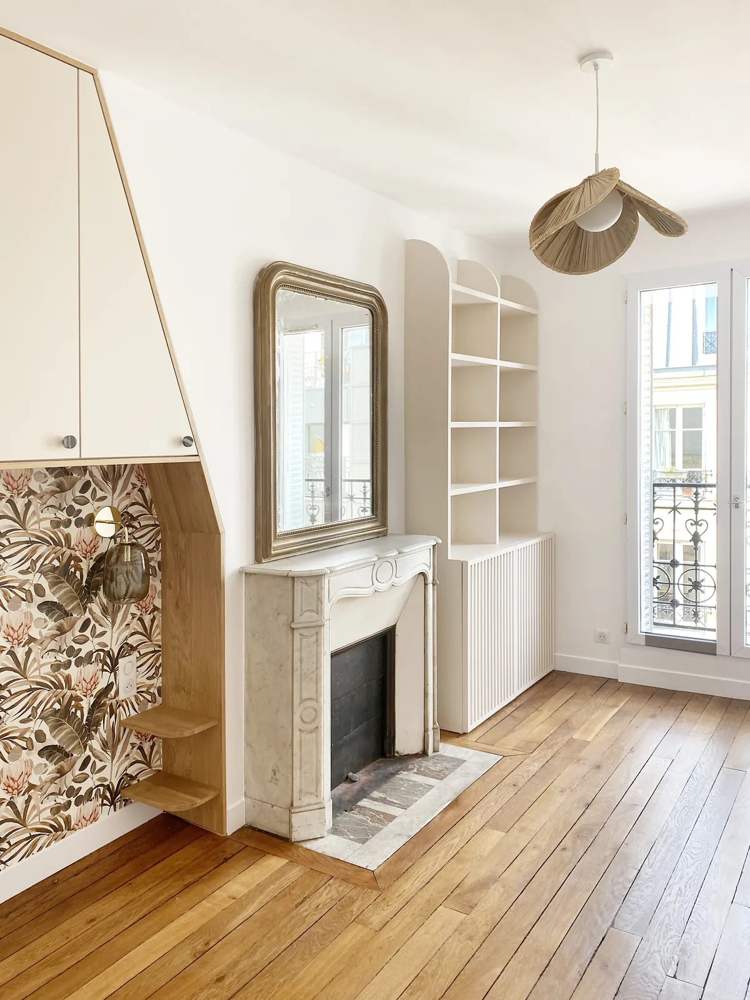
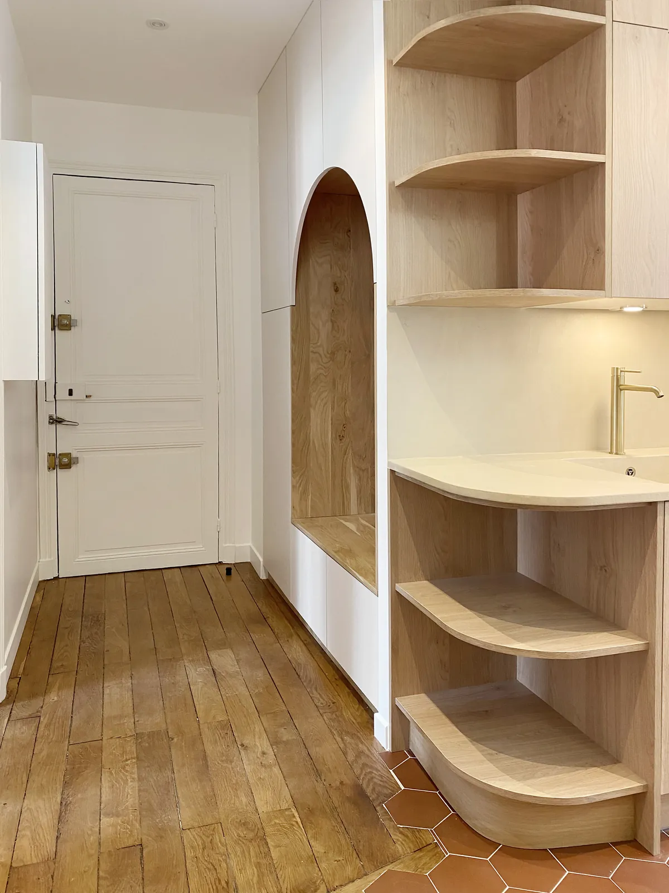
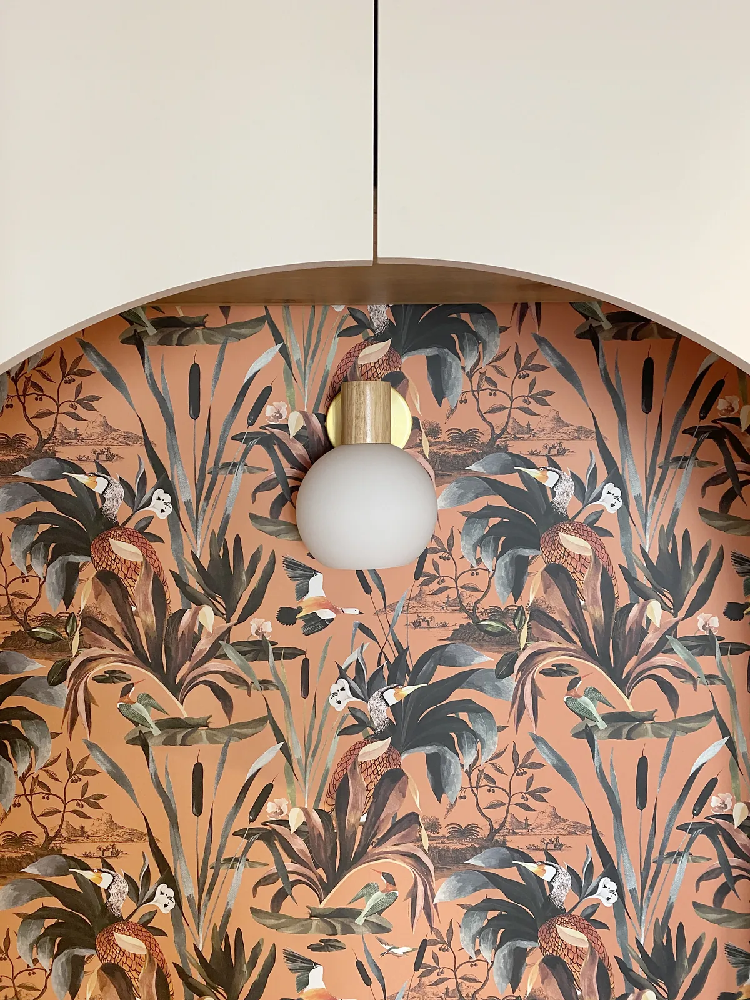
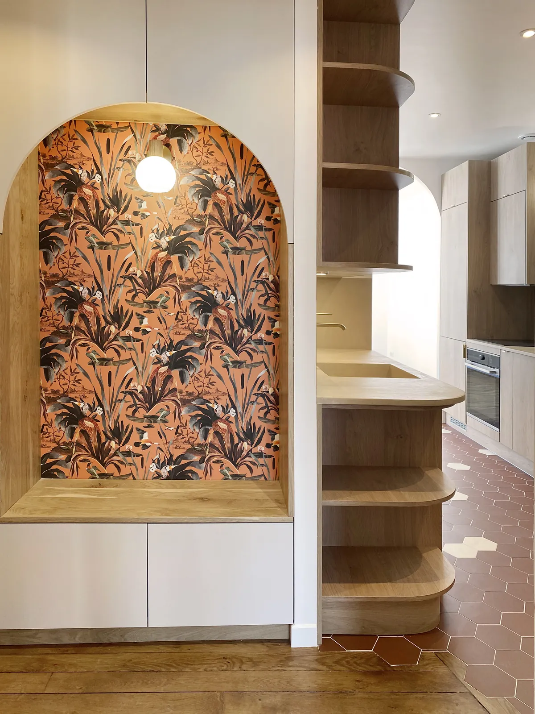
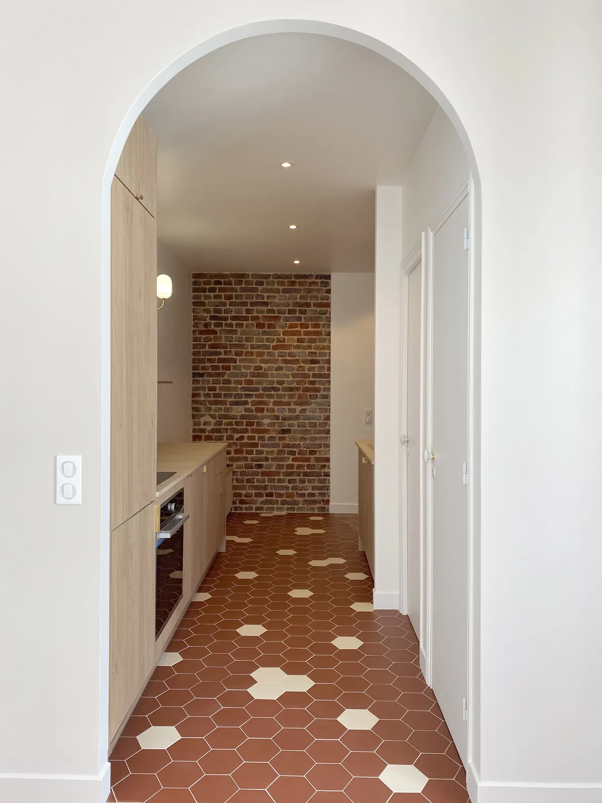
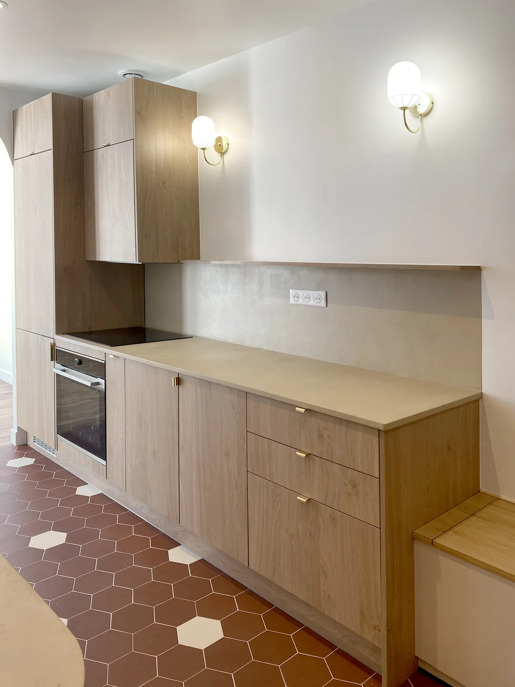
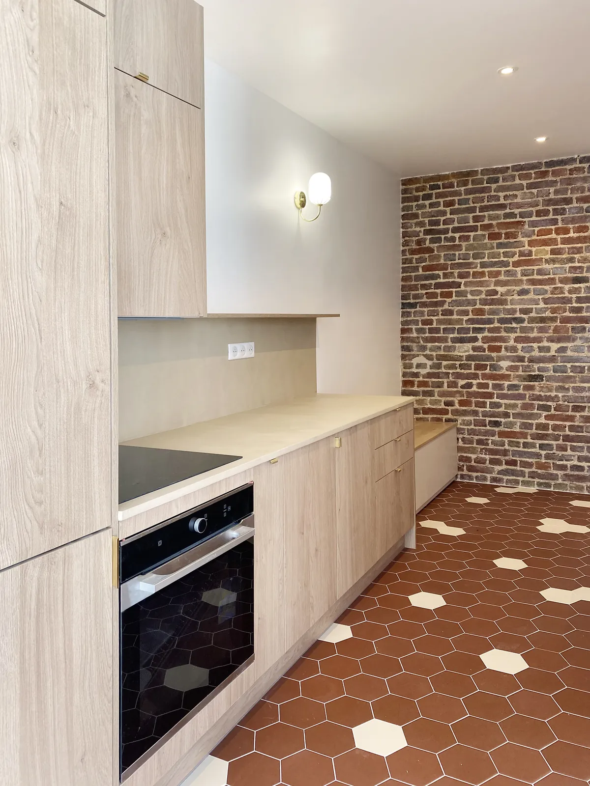
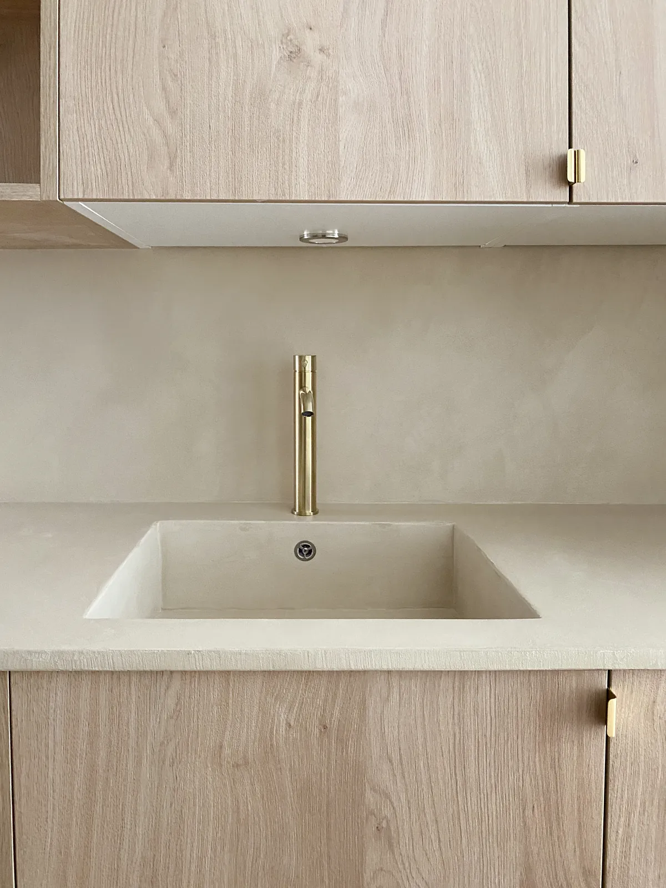
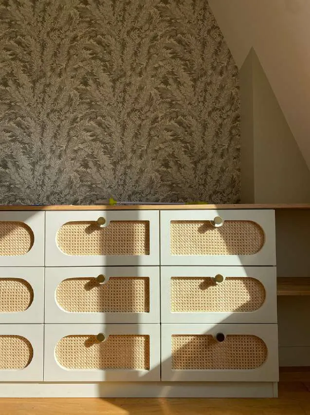
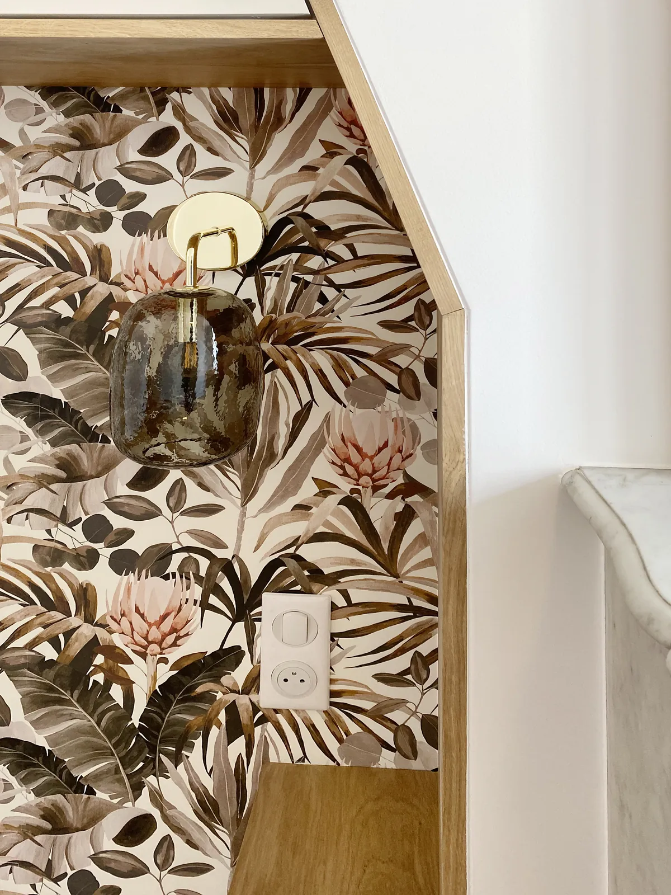
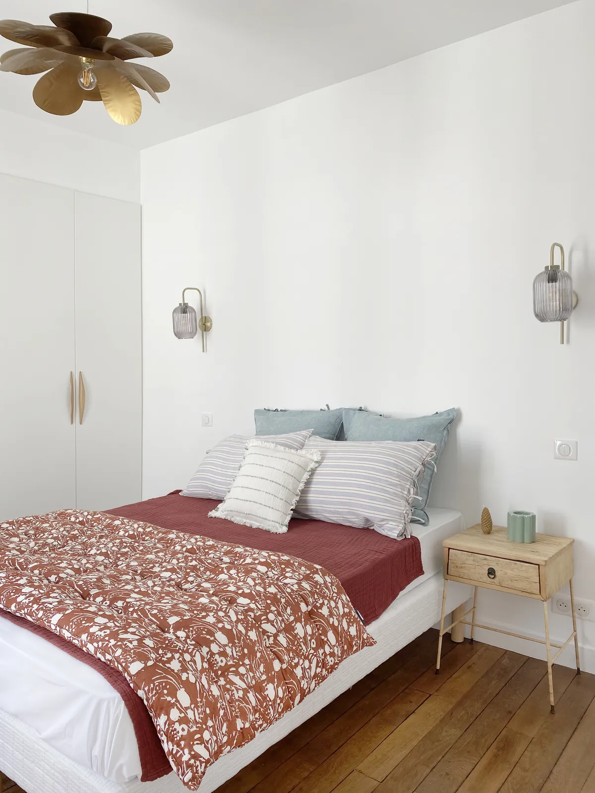
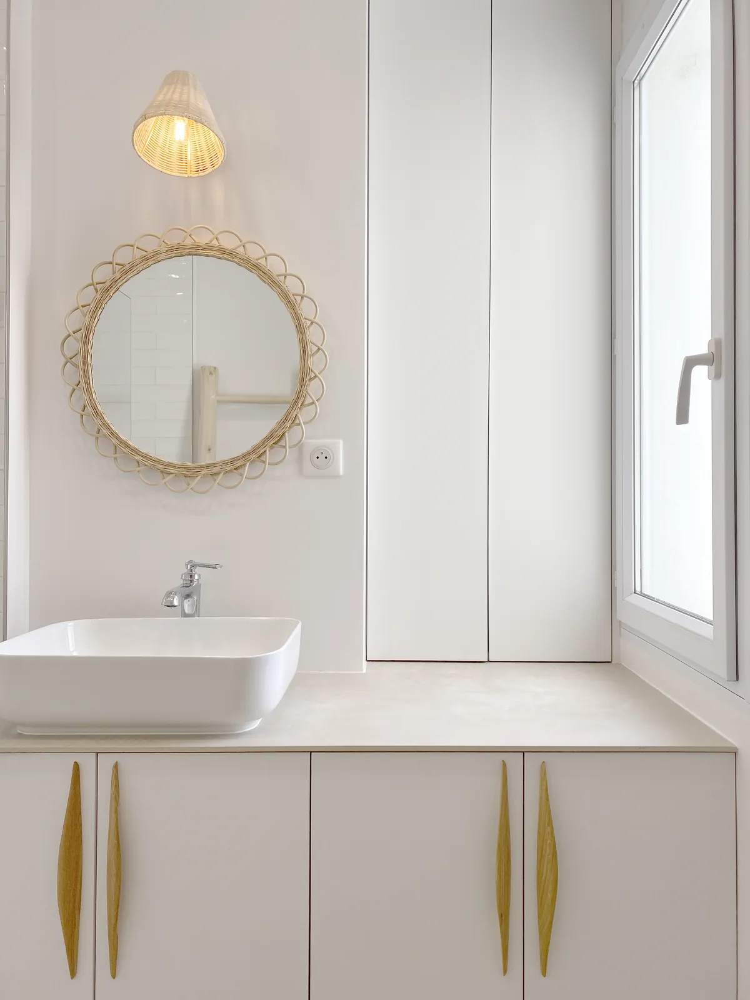
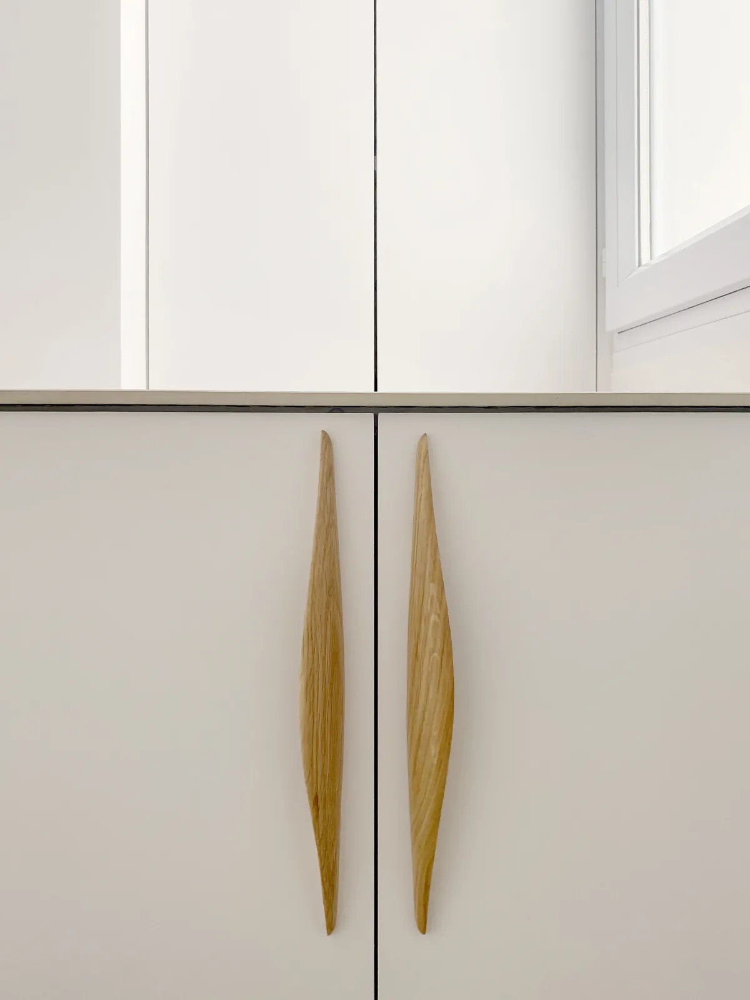